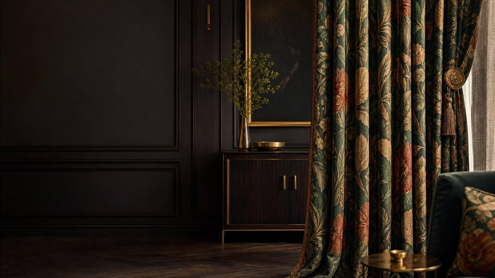

01 / Residential


Premium curtains for refined interiors
Gulshan 2 is one of the most sought-after addresses in Dhaka. Modern apartment towers, corporate offices, upscale restaurants, and international-standard interiors sit side by side, and every detail is expected to look sharp. In a setting like this, a window can undo a good interior. A curtain that is too short, too thin, or the wrong tone makes the whole room feel unfinished.
Choosing from a catalogue alone rarely solves this. Ceiling height, window scale, sun direction, lining, fullness, and track placement all shape how a curtain hangs and performs. Curtain Canvas delivers luxury curtains in Gulshan 2 as one connected service: consultation, fabric selection, precise measurement, custom tailoring, hardware, installation, and after-sales care.
Talk with our Curtain ExpertDesigned around the way you live
Life in Gulshan 2 moves between apartments, boardrooms, cafés, and hotel lobbies, and each setting asks something different from a curtain. A living room wants softness and elegance. A bedroom wants darkness and quiet. An office wants a crisp, professional line. A restaurant wants atmosphere.
Our planning looks at the details that matter most in this neighborhood:
Explore the range
Curtain Canvas offers a carefully edited collection of luxury curtains for homes and commercial spaces in Gulshan 2. The range covers modern, classic, and contemporary interiors, with options for every level of privacy and light control.
Interior-based curtains do more than dress a window—they set the mood of the room. Designed to work with your interiors rather than compete with them, they bring light, texture, and flow into balance. Because when the curtains are right, your space doesn't just look finished—it feels alive.
01 / Residential

02 / Workspace

03 / Hospitality
Seasonal curtains are built around adaptability. Rather than one curtain doing an average job all year, seasonal curtains let you switch with the weather, the season's use, and the mood you're after.
Complete support
A great curtain starts long before stitching begins. Our services guide you from the first idea to a neatly fitted window.

Made to measure
Two windows of the same size can call for very different curtains once the room around them changes. Our custom curtain design service in Gulshan 2 shapes each solution around your window and your interior, rather than trimming a ready-made option to fit.
Residential and professional
Homes ask for comfort and warmth. Offices ask for orders and polish. Curtain Canvas plans each window treatment around what the space is for.
Hospitality interiors
In hotels, cafés, and restaurants, curtains shape how guests feel from the moment they walk in. The right fabric softens a room, adds privacy, and supports the brand's visual identity.
From first visit to final fitting
Premium fabric deserves careful handling at every stage. Our six-step process keeps your project clear, organized, and on track.
Consultation:
We talk through your space, style direction, privacy needs, and expectations.
Fabric and catalogue selection:
A shortlist of fabrics, colors, linings, and styles are prepared for you.
Measurement:
Windows and fitting points are measured with care for accurate production.
Design confirmation:
Style, fabric, length, layering, hardware, and finishing are agreed.
Custom production:
Your curtains are stitched and finished to the approved specification.
Installation:
Curtains, rods, and tracks are fitted and checked at your site.
Convenient from start to finish
The best luxury curtain is not the priciest or the most ornate one. It is the one that fits your window, solves a real need, and feels natural in your interior.
Call Us TodayCommon questions